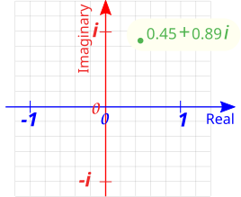
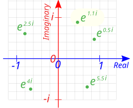
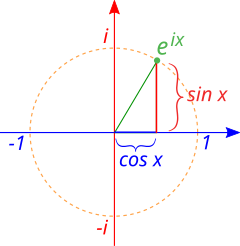
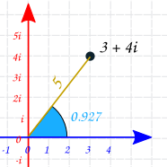
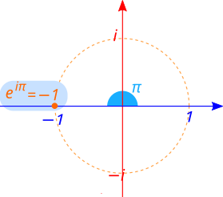
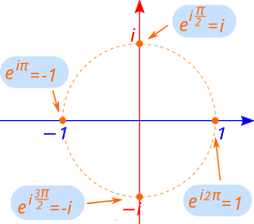

Euler's Formula for Complex Numbers
(There's another "Euler's Formula" in Geometry,
here we look at the one used in Complex Numbers)
You may have seen the famous "Euler's Identity":
eiπ + 1 = 0
It seems absolutely magical that such a neat equation combines:
- e (Euler's Number)
- i (the unit imaginary number)
- π (the famous number pi that turns up in many interesting areas)
- 1 (the first counting number)
- 0 (zero)
And also has the basic operations of add, multiply, and an exponent as well!
But if you want to take an interesting trip through mathematics, you will discover how it comes about.
Interested? Read on!
Discovery
It was around 1740, and mathematicians were interested in imaginary numbers.
An imaginary number, when squared gives a negative result:
This is normally impossible (try squaring a few numbers, remembering that multiplying negatives gives a positive, and see if you can get a negative result).
But just imagine we have a number called i for imaginary that can do this:
i2 = −1
Leonhard Euler was enjoying himself one day, playing with imaginary numbers (or so I imagine!), and he took this well known Taylor Series (learn about those, they are fascinating):
ex = 1 + x + x22! + x33! + x44! + x55! + ...
And he put i into it:
eix = 1 + ix + (ix)22! + (ix)33! + (ix)44! + (ix)55! + ...
And because i2 = −1, it simplifies to:
eix = 1 + ix − x22! − ix33! + x44! + ix55! − ...
Now group all the i terms at the end:
eix = ( 1 − x22! + x44! − ... ) + i( x − x33! + x55! − ... )
And here's the miracle ... the two groups are actually the Taylor Series for cos and sin:
| cos x = 1 − x22! + x44! − ... |
| sin x = x − x33! + x55! − ... |
And so it simplifies to:
eix = cos x + i sin x
He must have been so happy when he discovered this!
And it is now called Euler's Formula.
Let's give it a try:
Example: when x = 1.1
Note: we are using radians, not degrees.
The answer is a combination of a Real and an Imaginary Number, which together is called a Complex Number.
We can plot such a number on the complex plane (the real numbers go left-right, and the imaginary numbers go up-down):

Here we show the number 0.45 + 0.89 i
Which is the same as e1.1i
Let's plot some more!

A Circle!
In fact putting Euler's Formula on that graph produces a circle:

eix produces a circle of radius 1
And when we include a radius of r we can turn any point (such as 3 + 4i) into reix form by finding the correct value of x and r:
Example: the number 3 + 4i
To turn 3 + 4i into reix form we do a Cartesian to Polar conversion:
- r = √(32 + 42) = √(9+16) = √25 = 5
- x = tan-1 ( 4 / 3 ) = 0.927 (to 3 decimals)
So 3 + 4i can also be 5e0.927 i

It is Simply Another Form
It is another way of having a complex number.
This turns out to very useful, as there are many cases (such as multiplication) where it is easier to use the reix form rather than the a+bi form.
Plotting eiπ
Last, when we calculate Euler's Formula for x = π we get:
And here's the point created by eiπ (where our discussion began):

And eiπ = −1 can be rearranged into:
eiπ + 1 = 0
The famous Euler's Identity.
Footnote: in fact all these are true:

- Q: How many mathematicians does it take to change a light bulb?
- A: ei2π